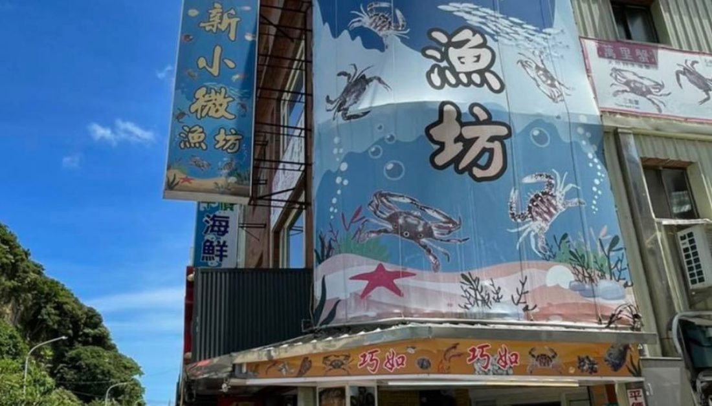
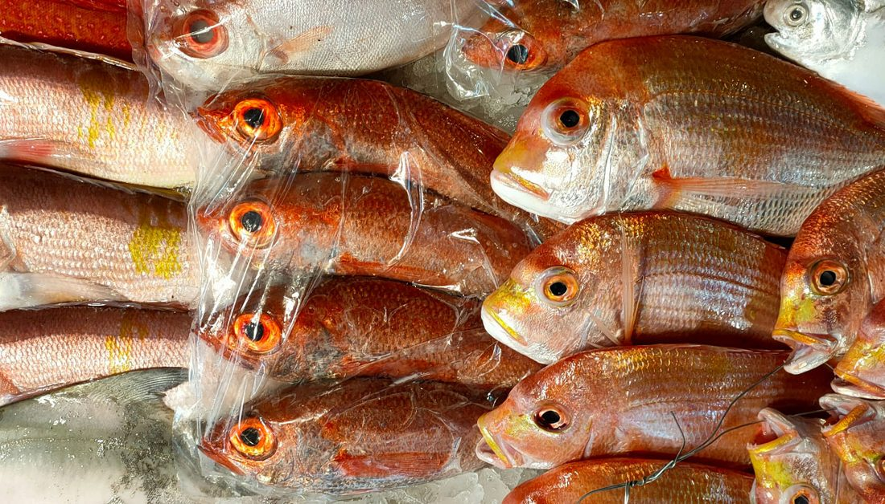
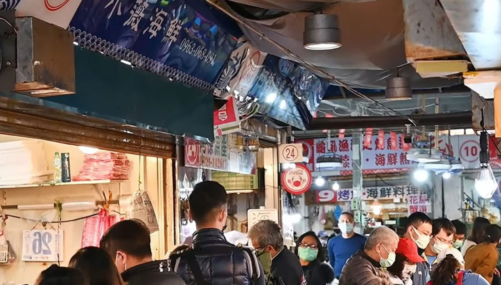

連傳正 鉅鑫管理顧問有限公司
從金融保險起家，走到漁港、餐桌與茶席。做的事看起來很散，但底下是同一件——把好東西，誠實地交到需要的人手上。
我是連傳正。做保險出身，現在同時管五個品牌、跑漁港、接待客人、也在協會與社團裡做事。
會走到今天這樣，是因為我不太能忍受「說得好聽但東西不到位」。賣酒就得自己喝過、賣魚就得自己去漁港看，客戶問我這條魚幾月最肥，我答得出來——這是我唯一的門檻，也是我全部的本事。
所以鉅鑫的東西不做低價競爭。品項少、挑得兇，但每一樣我都敢自己端上桌。
不是先畫好藍圖再照著做，是一路上把客戶真正需要的東西一件一件補進來。
以誠信為起點。人生每個階段的規劃，是最早也最久的本業。
為了更緊密地連結客戶與朋友，把各項服務做大做精，鉅鑫管理顧問有限公司正式登記。
從金融保險延伸到貿易、餐飲、不動產、進口代理與教育，並自營五個消費品牌。
彼此不是各做各的——客戶在其中一個領域認識我們，通常會用到第二個。
國際專業顧問認證，人生各階段的完整規劃，讓你奮鬥時無後顧之憂。
農產與漁產外銷，打造優質的國際市場銷售通道。
結合龜吼觀光、兩岸四地餐飲運營經驗，以及國際調茶師與侍酒師的專業觀點。
以誠信為本，物件資源豐富，精準匹配買賣雙方，替你省下時間。
羽球用品、葡萄酒等商品代理，以供應鏈為國內市場引進高品質商品。
國際 NLP 神經語言學師資，因材施教；並舉辦營隊與企業實習。
共同的規則只有一條：自己不會端上桌的，不賣。
龜吼漁港當日現撈，自家漁船撈捕、上岸真空急凍。做 VIP 現流直送、通路批發，也與龜吼在地餐廳聯名。
把品酒變成日常、藏酒當成興趣。依酒款個性配奧地利杯型，讓每一口珍釀發揮原有的性格。
以南投鹿谷青心烏龍為主的台灣精品茶。目標是把台灣茶的滋味送上米其林的桌。
內湖預約制私廚。現流海鮮、精品茶與世界酒款，配專業侍酒師與可客製的菜單，可包場。
把產地直接搬到餐桌前的下一步。目前籌備中。
另有磊山保經的壽險與產險業務，是最早的本業，也持續在做。



和龜吼漁港的 19 艘共捕漁船長期合作，這是鑫海產能講「現流」兩個字的底氣。
凌晨的船靠岸、天亮前分魚，好的那一批不會流到市場上——那是熟客的。真空急凍在上岸那一刻就做完，鮮甜被封在裡面。這套流程沒有捷徑，只有人在現場。
從產地往回推，才有後面的私廚、批發與餐廳聯名。先有產地，才有品牌。
「無私」是鉅鑫四大核心理念之一。這些是實際參與過的：
鉅鑫以資源整合為核心。這些是長期合作的對象：
不管是想吃到好魚、想配一支對的酒、想談合作，還是想聊保險規劃——先聯絡，再看怎麼配。